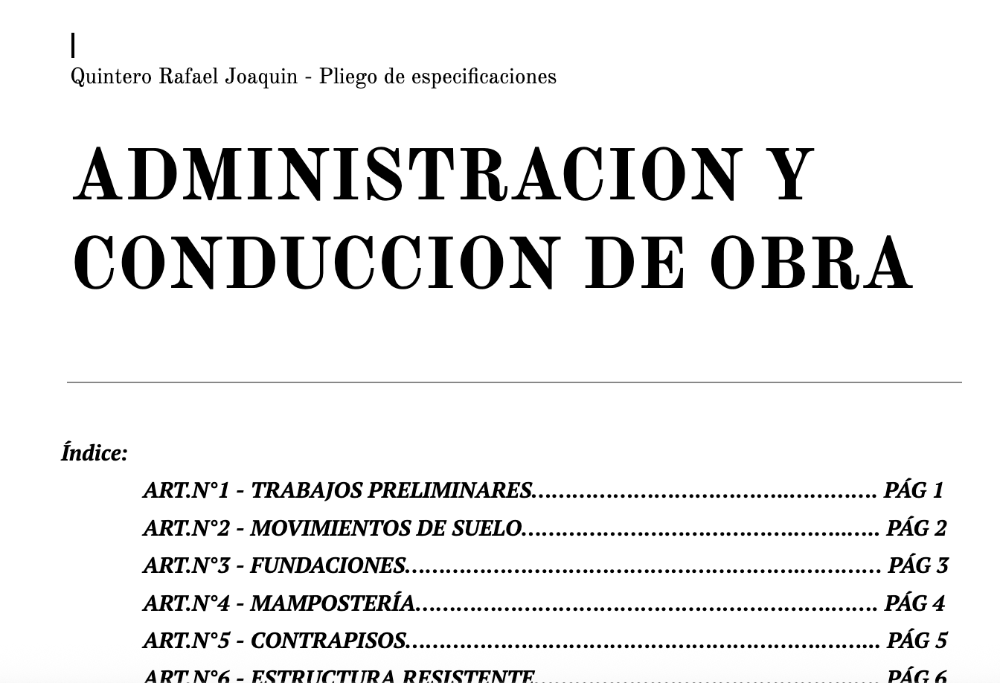
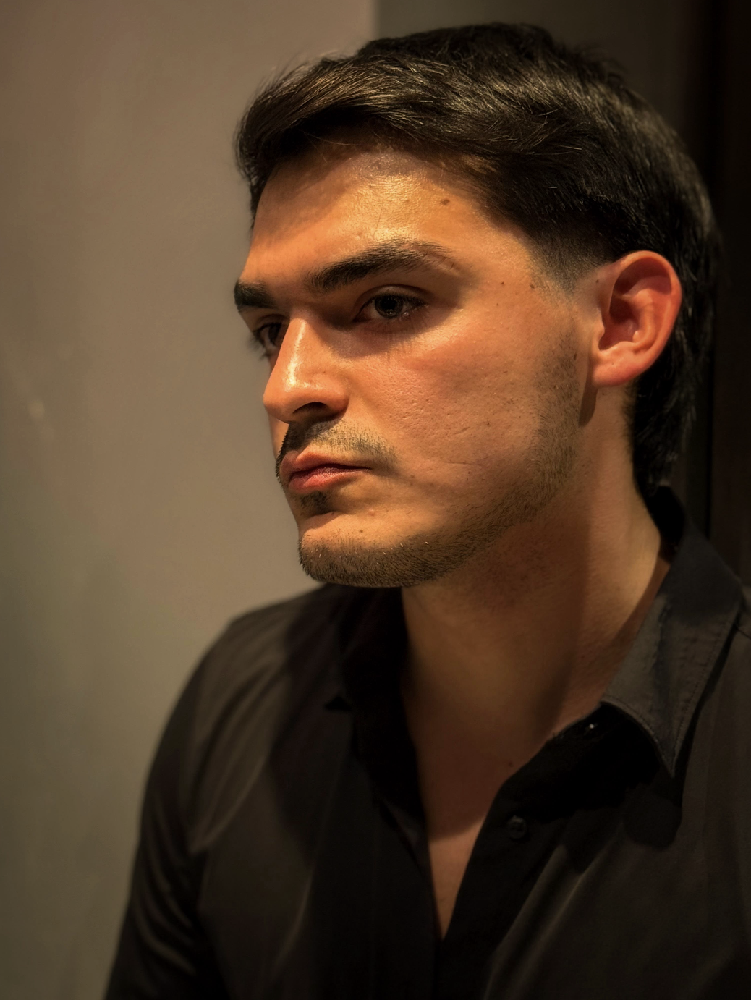
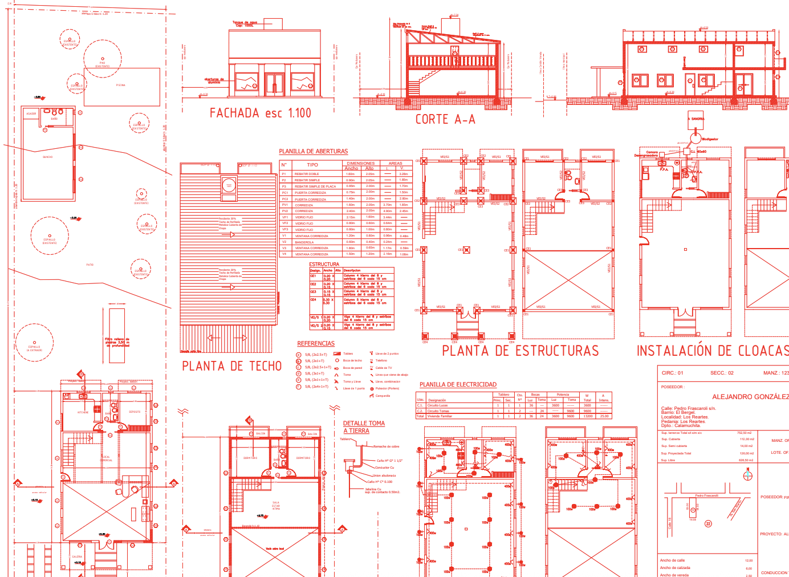
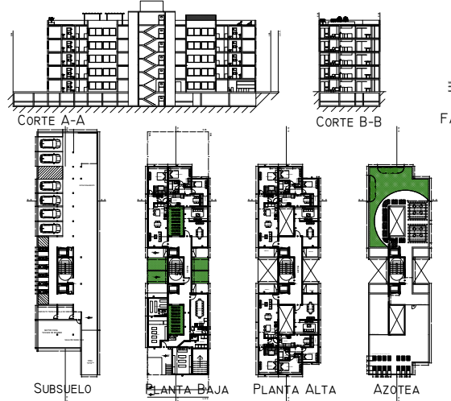
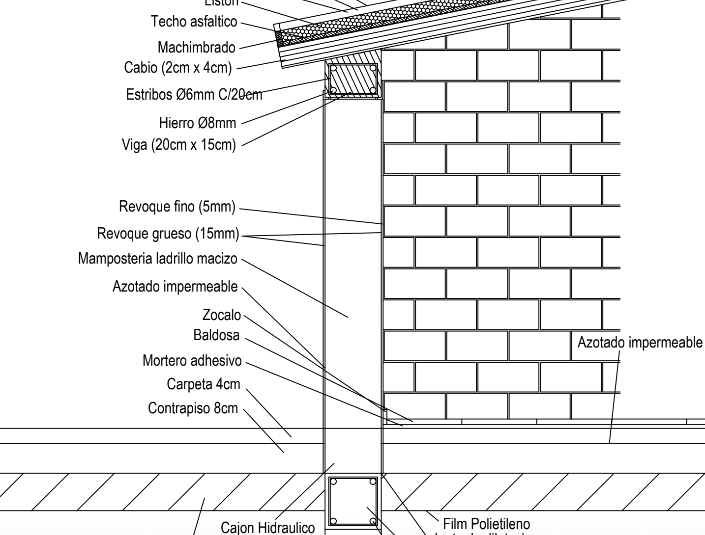

Proyecto Valle del Sol-CBA.ARG
Vivienda unifamiliar desarrollada en el barrio cordobés de Valle del Sol, Cordoba, Argentina.
Ver en Drive →Maestro Mayor de Obras — Córdoba, Argentina
Técnico y creativo. Convierto requerimientos en soluciones constructivas claras, desde la interpretación del plano hasta la ejecución en obra.
Maestro Mayor de Obras recibido en la ciudad de Córdoba. Manejo avanzado de interfaces y software de diseño y representación gráfica, con la capacidad de aprender cualquier herramienta nueva que un proyecto requiera, de forma rápida y eficiente.

Formación técnica orientada a la construcción: interpretación de planos, sistemas constructivos, instalaciones y dirección de obra.
Ejecución de instalaciones de agua, eléctricas, cloacales, pluviales y de gas en obras particulares.
Elaboración de documentación técnica y planos, junto a tareas de gestión y seguimiento de proyectos de arquitectura.

Vivienda unifamiliar desarrollada en el barrio cordobés de Valle del Sol, Cordoba, Argentina.
Ver en Drive →
Proyecto aprobado y posteriormente ejecutado durante desarrollado durante mi pasantia en Gora Arquitectura. Participé desde diseño hasta gestion y seguimiento de obra.
Ver en Drive →
Edificio de uso mixto en el barrio cordobes de Alberdi. Proyecto en el que se diseñó conforme a necesidades, espacios y contexto.
Ver en Drive →
Vivienda unifamiliar proyectada sobre un terreno con desnivel negativo, niveles los cuales fueron levantados in situ en el barrio cordobes de Mendiolaza.
Ver en Drive →